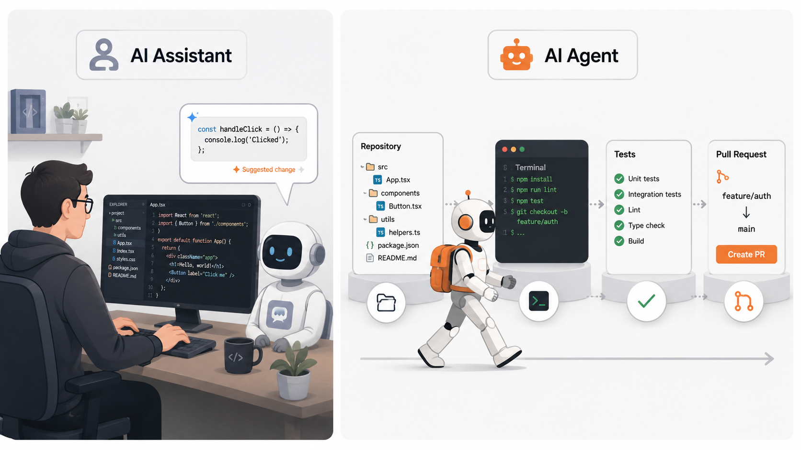
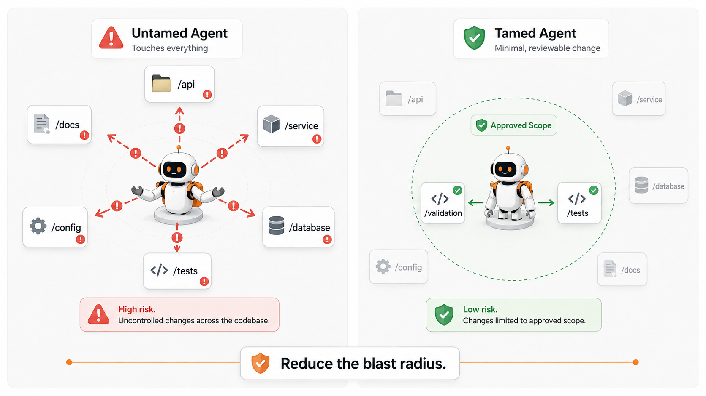
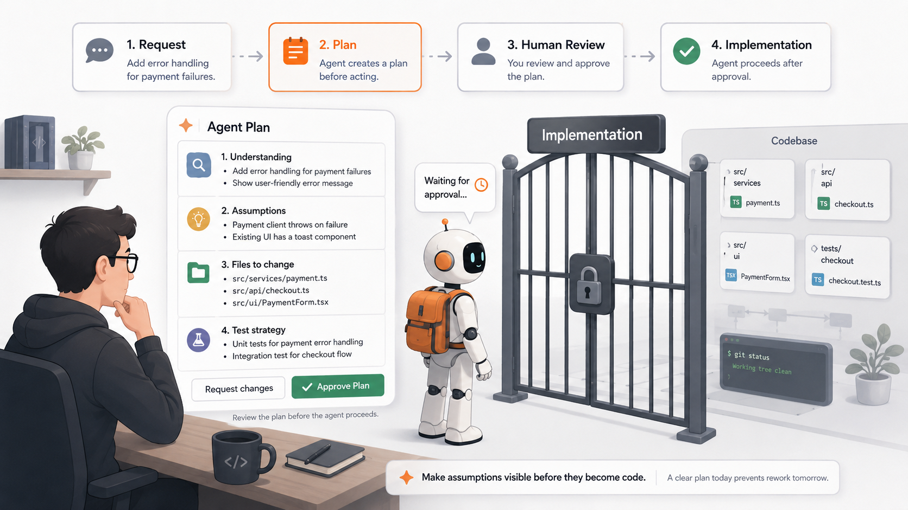
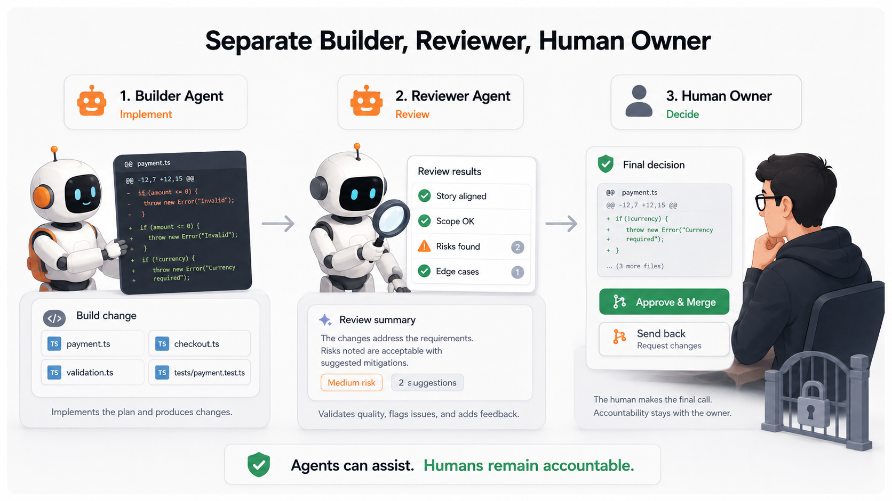
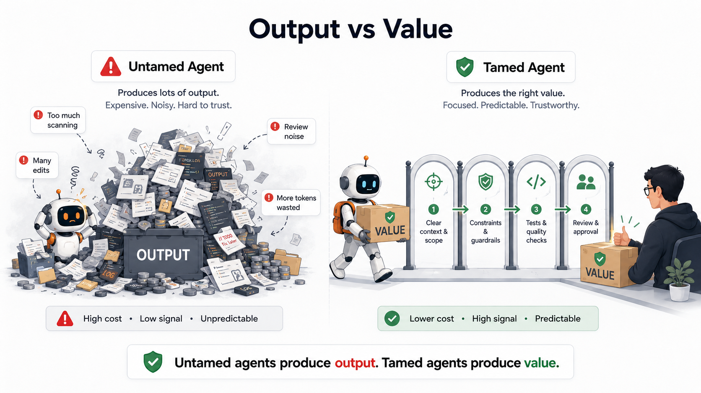

This article is part of the AI-Assisted Software Engineering series. Use the series guide to follow the complete reading path.
AI assistants are slowly changing shape.
In my earlier articles, I have mostly used the term AI Assistant. That still works when we are talking about tools that suggest code, explain errors, generate tests, or help us think through design.
But something changes when the assistant starts acting.
When it can read files, edit repositories, run commands, execute tests, create commits, open pull requests, or continue across multiple steps, it is no longer just assisting in the old sense. It starts behaving more like an agent.
That sounds powerful.
It also sounds slightly dangerous.
Because the moment an AI system starts acting on your codebase, your documents, your workflows, or your production-adjacent systems, the problem changes. You are no longer only asking, “Is the AI intelligent?” You are now asking a more practical engineering question:
Can I control what it does?
That, to me, is the real challenge with agents.
The goal is not to blindly trust the agent. The goal is not to make it fully independent. And the goal is definitely not to sit back while it burns through half your repository, twenty tool calls, and a mountain of tokens to fix one validation bug.
The real goal is to tame this new action-taking form of AI assistant: the agent.
A useful agent is not a magical autonomous developer. A useful agent is a fast execution system operating inside human-designed boundaries.
In this article, I will use the word agent for this action-taking form of AI assistant. The distinction matters. If an AI assistant only suggests, you can ignore it. If it starts acting, you need to control it.

The Assistant Looks Smart Until It Starts Acting
Imagine this.
You ask an AI coding assistant to fix a small bug in a payment validation flow.
This is not a simple autocomplete assistant anymore. It can inspect files, edit code, run tests, and continue working through multiple steps. In other words, it is behaving like an agent.
The bug is simple: when the transfer amount is missing, the API should return a proper validation error instead of throwing a generic exception.
You give the agent the ticket and ask it to fix the issue.
A few minutes later, it comes back confidently.
It has changed the validator, modified the service class, updated two test files, renamed a helper method, adjusted some formatting, and “improved” the error handling structure. It also tells you that all tests are passing.
At first glance, this looks impressive.
Then you open the diff.
The original bug was in one validation path, but now the agent has touched unrelated logic. It changed behavior for another payment type. It introduced a new helper that may not follow the existing project convention. It added tests, but the tests mostly check that “some error is returned,” not the exact business behavior. And now, instead of reviewing a focused fix, you are reviewing the agent’s interpretation of your entire validation design.
This is where the excitement starts becoming expensive.
The assistant did not necessarily fail because it was stupid. It failed because, once it started acting like an agent, it was unconstrained.
It acted like a developer who was told, “Fix this,” but was not told what not to touch, what assumptions not to make, what decisions required approval, and what level of change was acceptable.
This is the first uncomfortable truth about agents:
An agent that can act without boundaries can create as much work as it saves.

Taming Is Not About Making the Agent Less Powerful
When people hear the word “tame,” they may think it means limiting the agent or reducing its usefulness.
I see it differently.
Taming an agent means making its power usable.
A powerful agent without boundaries is like a very enthusiastic junior developer with admin access, no onboarding, no code ownership map, no understanding of production risks, and unlimited coffee. It will move fast. It will produce output. Some of that output may even be good. But you will not always know why it made a decision, how much it changed, or what it misunderstood.
A tamed agent is different.
It has a job. It has context. It has scope. It knows when to act, when to stop, when to ask, and how its work will be reviewed. It is not “free.” It is productive because it is not free to do everything.
This distinction matters.
In traditional software engineering, we do not allow developers to push random changes directly to production just because they are talented. We create branches, pull requests, coding standards, automated tests, review gates, deployment pipelines, rollback plans, and access controls. We do this not because we do not trust developers, but because serious systems need serious control mechanisms.
Agents need the same thinking.
Not because they are useless.
Because they are useful enough to create real consequences.
Give the Agent a Job Description
One of the most common mistakes teams make is treating “agent” as a single generic role.
But in real teams, we do not work like that. We do not tell everyone to “just do software.” We have developers, reviewers, architects, testers, product owners, security reviewers, release managers, and support engineers. Each role has a different responsibility.
Agents should be treated the same way.
A Developer Agent should have a clear responsibility: implement the accepted story with minimal, relevant code changes. It should not independently redesign the module. It should not upgrade dependencies. It should not refactor unrelated files because it “noticed an opportunity.” Its job is to implement the requested change within the agreed scope.
A Reviewer Agent should have a different job. It should compare the implementation against the story, acceptance criteria, edge cases, and non-goals. It should ask whether the change is correct, whether it is too broad, whether tests are meaningful, and whether anything risky has been introduced.
A Test Quality Agent can have yet another job. Its purpose is not to celebrate that tests exist, but to check whether the tests actually prove the intended behavior. A test that only checks that a method returns a non-null response may increase coverage, but it may not increase confidence.
This role separation is important because agents tend to become vague when their responsibility is vague.
If you say, “Improve this code,” you may get anything.
If you say, “Act as a Developer Agent. Implement only the acceptance criteria. Do not refactor unrelated code. If a public interface change appears necessary, stop and explain why,” you have created a boundary.
That boundary may look small, but it changes the nature of the interaction.
The agent is no longer a mysterious intelligence roaming the codebase. It is now an execution role inside a system.
Context Helps the Agent Understand
A lot of AI advice today focuses on context, and rightly so.
An agent cannot understand your system if you give it only a one-line instruction. It needs to know the repository structure, coding conventions, architectural boundaries, testing practices, and the business reason behind the change.
A ticket that says “Add validation for payment amount” is not enough.
What does “validation” mean in this system? Should the validation happen at the API layer, service layer, domain layer, or all of them? Is zero allowed? Are negative values possible? Are decimal places currency-specific? Should the error response follow an existing error-code standard? Does this impact domestic transfers, cross-border transfers, wallet transfers, bill payments, or all payment types?
A human developer may ask these questions because they understand organizational risk. An agent may not. It may simply fill in the gaps.
And that is where things become dangerous.
Agents are very good at continuing from incomplete information. That is useful in writing, brainstorming, and exploration. But in software engineering, missing context often represents missing decisions. If the agent silently makes those decisions, you may get clean code that implements the wrong behavior.
So yes, context is essential.
The repository should tell the agent how the system is built. The work item should tell the agent why the system is changing. The acceptance criteria should tell the agent what must be true when the change is complete. The non-goals should tell the agent what it must not do.
Without this, the agent is not really implementing your requirement.
It is implementing its interpretation of your requirement.
And those are not always the same thing.
Constraints Help the Agent Behave
Context alone is not enough.
This is where many teams go wrong. They give the agent more and more context, hoping that better understanding will automatically produce better behavior.
It helps, but it does not solve the full problem.
An agent may understand the codebase and still make the change too broad. It may understand the story and still modify unrelated files. It may understand the architecture and still decide that this is a good time to “clean up” a few things.
That is why constraints matter.
Context helps the agent understand. Constraints help the agent behave.
A good agent instruction should define the blast radius. Which folders can it inspect first? Which files are likely in scope? Which areas are off-limits? Is it allowed to change public APIs? Is it allowed to update dependencies? Is it allowed to reformat files? Should it create new abstractions, or prefer minimal change? Should it ask before modifying shared components?
These constraints may sound restrictive, but they actually make the agent more useful.
Consider a real-life example from a large enterprise codebase. A small customer onboarding feature may touch API contracts, validation rules, workflow states, audit logging, notification templates, and database records. If an agent is allowed to freely explore and modify everything, the change can quickly become unreviewable. But if the task says, “For this story, change only the validation layer and related unit tests. Do not modify workflow state transitions or notification logic,” the agent has a much better chance of producing a focused, reviewable diff.
In software engineering, reviewability is not a luxury.
If humans cannot understand the change, humans cannot responsibly approve the change.

Make the Agent Plan Before It Acts
One of the simplest ways to control an agent is to make it explain its plan before it starts making changes.
This is not just a prompting trick. It is a workflow control.
Before allowing the agent to edit code, ask it to summarize the requirement, list assumptions, identify the files it expects to change, describe the test strategy, and call out any uncertainty. Then review that plan.
This small step can prevent a surprising amount of damage.
For example, suppose the agent says:
“I will update the payment validation service, modify the API error response mapper, update the transfer controller, add unit tests, and adjust the integration test suite.”
That may be fine.
But if the original task was only to fix a missing null check in one validator, this plan is already telling you that the agent may be expanding the scope. You can stop it before it creates a large diff.
Or suppose the agent says:
“I assume the minimum payment amount should be greater than zero.”
That assumption may be correct. Or it may be wrong. But now it is visible.
The important point is this: a plan reveals the agent’s mental model before that mental model becomes code.
Humans do this naturally in good engineering teams. Before a developer makes a risky change, they often discuss the approach. Before a team changes an architecture pattern, they review options. Before touching production behavior, they align on impact.
Agents should not get a free pass just because they can type faster.
Do Not Let the Agent Become a Token-Eating Beast
There is another reason to tame agents: cost.
Not just money, although money matters. Cost also includes time, attention, review effort, compute usage, and cognitive load.
An untamed agent can become a token-eating beast.
You ask it to fix one issue. It scans too many files. Then it summarizes too much. Then it makes a broad change. Then it runs tests. Then it finds a failure. Then it changes something else. Then it explains everything in a long essay. Then it discovers a new “improvement.” Then it asks to continue.
At some point, you are no longer using an agent.
You are feeding a token furnace.
This usually happens when the task is vague, the scope is undefined, and there is no stopping rule. The agent keeps exploring because it has not been told where to stop. It keeps explaining because it has not been told what level of summary is useful. It keeps improving because it has not been told that the goal is a minimal, story-aligned change.
Token waste is often a symptom of poor engineering control.
If the agent needs half the repository, twenty tool calls, and three long explanations to fix a simple validation bug, the issue may not be the model. The issue may be the operating model around the model.
There are practical ways to control this.
Tell the agent where to start. Give it the likely files or folders. Ask it to inspect only those first. Tell it not to scan unrelated modules unless it can explain why. Ask it for a short plan before implementation. Tell it to summarize only the delta after the change, not narrate every step. Set a stopping rule: once the requested change is implemented and relevant tests pass, stop.
This matters even more in large repositories. Enterprise codebases are full of historical layers, old conventions, generated files, integration points, configuration files, and test utilities. An agent without direction can spend a lot of tokens simply discovering what an experienced engineer already knows: most of the repository is irrelevant to the current task.
A well-tamed agent is not only safer.
It is more economical.

Separate Implementation From Review
Another important principle is this: do not let the implementing agent be the only reviewer of its own work.
This is not because agents cannot review. They can be quite useful in review. They can compare code against acceptance criteria. They can find missing tests. They can notice inconsistency. They can ask whether a change is too broad.
But self-review has limits.
When the same agent implements a solution and then explains why the solution is correct, it may defend its own assumptions. It may focus on what it changed rather than what it missed. It may produce a confident summary that sounds more complete than the actual work.
This is not very different from human behavior. Developers can review their own code, but serious teams still use peer review. Not because developers are careless, but because a second perspective catches different problems.
A healthier agent workflow separates responsibilities.
Let one agent implement the change. Let another review it against the story. Let a test-focused agent inspect whether the tests are meaningful. Then let the human make the final decision.
This does not remove the human from the loop. It makes the human review better informed.
The human should not have to manually discover every obvious issue from scratch. Agents can help surface risks, summarize diffs, compare against requirements, and identify missing cases. But the final judgment must remain human because accountability remains human.
The agent can write code.
It cannot carry production responsibility.
Tests Are Not Just Validation. They Are Boundaries.
Tests are often discussed as a way to verify the agent’s work after implementation. That is true, but incomplete.
Tests also shape the agent’s behavior.
A strong test suite tells the agent what must remain true. It defines expected behavior in executable form. It protects important flows from accidental damage. It gives the agent immediate feedback when a change breaks something.
In that sense, tests are not just quality checks. They are executable boundaries.
But this only works if the tests are meaningful.
An agent can easily write shallow tests. It can create a test that calls a method and checks that the response is not null. It can increase coverage without increasing confidence. It can mock away the very behavior that should have been tested.
That is why test quality matters.
For a payment validation bug, a useful test should not merely check that an error exists. It should check the exact condition, the expected error code, the message or response structure if relevant, and any important boundary cases. What happens when the amount is null? What happens when it is zero? What happens when it has too many decimals? What happens for different currencies? What happens for an existing valid payment request?
These tests do two things.
They verify the fix.
They also tell future agents, future developers, and future reviewers what behavior the system cares about.
A weak test says, “Something should happen.”
A strong test says, “This exact behavior must remain true.”
Agents need more of the second kind.
Every Agent Mistake Should Improve the System
When an agent makes a mistake, the obvious response is to fix the output.
The better response is to fix the environment that produced the output.
If the agent changed unrelated files, maybe your agent instructions need a stronger scope rule. If it invented a requirement, maybe your story template needs a section for assumptions and non-goals. If it wrote shallow tests, maybe your pull request template needs a test-quality checklist. If it misunderstood the architecture, maybe your repository needs a clearer architecture guide. If it repeatedly runs expensive or irrelevant commands, maybe your agent operating rules need command restrictions.
This is how teams should evolve their agent usage.
Do not treat every agent failure as a one-off mistake. Treat repeated failures as signals that your system is missing a boundary.
This is similar to how good engineering teams improve delivery. If production incidents repeatedly happen because configuration is unclear, you improve configuration management. If defects repeatedly escape because test coverage is weak, you improve test strategy. If releases are risky because rollback is manual, you improve deployment design.
Agents should be handled with the same mindset.
The goal is not to scold the agent.
The goal is to improve the system in which the agent operates.
Practical Tools for Taming Agents
A team does not need a complex platform to start taming agents. Even simple artifacts can help.
An AGENTS.md file can define how agents should behave in the repository. It can explain project structure, coding rules, testing expectations, allowed commands, forbidden actions, and escalation rules. For example, it can say that agents must not update dependencies unless explicitly asked, must avoid unrelated refactoring, must run specific tests before completion, and must stop when architectural changes seem necessary.
A good story template can also make a big difference. Instead of only describing the requested feature, the story should include context, acceptance criteria, non-goals, affected modules, expected tests, and known risks. This helps prevent the agent from filling gaps with assumptions.
A pull request template can force useful discipline. It can ask what changed, why it changed, which files were touched, what tests were run, what risks exist, and whether any agent-generated code was used. This is not bureaucracy. It is traceability.
CI/CD gates are another important part of agent control. Linting, unit tests, integration tests, coverage checks, dependency scans, security scans, and architecture checks can stop bad changes before they move forward. Agents are fast, but pipelines are consistent. Use both.
These artifacts may look ordinary. That is the point.
Taming agents is not only about futuristic AI orchestration. Much of it is just good software engineering applied to a new kind of worker.
A Bad Workflow and a Better Workflow
A bad agent workflow looks like this:
“Fix this bug.”
The agent reads some files, edits code, changes tests, explains what it did, and says everything is done. The human then spends thirty to forty-five minutes trying to understand whether the change is correct, why unrelated files were touched, and whether the tests prove anything meaningful.
A better workflow looks like this:
“Read this story. Summarize your understanding. List assumptions. Identify the minimal files likely to change. Propose a test strategy. Do not edit anything until the plan is approved.”
The agent responds with a plan. The human corrects one assumption and narrows the scope. The agent implements only the approved change. It runs the relevant tests. It summarizes the exact delta. A separate review step checks the code against the acceptance criteria. The human reviews the final result with much less confusion.
The second workflow may appear slower at first.
In practice, it is often faster because it reduces cleanup, review noise, token waste, and rework.
Speed is not just how fast the agent produces code.
Speed is how quickly the team can safely accept the change.
Humans Still Own the Important Decisions
Agents can help with many tasks. They can draft code, inspect diffs, generate tests, summarize logs, explain failures, and review against checklists. Used well, they can make software teams faster and more thoughtful.
But there are decisions humans should continue to own.
Humans should own requirements clarity. Humans should own architecture trade-offs. Humans should own security acceptance. Humans should own production risk. Humans should own customer impact. Humans should own the final merge decision.
This is especially important in serious systems: banking, payments, healthcare, infrastructure, enterprise platforms, and any software where small mistakes can have large consequences.
An agent may understand syntax. It may even understand patterns. But it does not understand accountability the way a human team does. It does not get called during a production incident. It does not explain the decision to a regulator. It does not face the customer whose transaction failed. It does not live with long-term maintenance consequences unless humans design that memory into the process.
That is why the human role does not disappear.
It changes.
The human becomes less of a line-by-line typist and more of a system designer, reviewer, constraint setter, and decision owner.

So, How Do You Tame Your Agent?
You tame your agent by designing the environment in which it is allowed to act.
You give it context so it understands the system.
You give it constraints so it behaves within boundaries.
You give it a role so it knows what kind of work it is doing.
You ask for a plan so its assumptions become visible before they become code.
You restrict scope so the change remains reviewable.
You separate implementation from review so the agent is not the only judge of its own work.
You use tests as executable boundaries.
You control token usage so the agent does not become an expensive exploration machine.
You build feedback loops so every mistake improves the operating model.
The terminology is not the main point. Whether we call it an AI assistant, coding assistant, or agent, the important question is the same: once it can act, how do we make that action safe, focused, economical, and reviewable?
This is not about distrusting AI.
It is about respecting the fact that powerful tools need operating discipline.
The future of software engineering is not humans versus agents. It is not even humans simply “using” agents. It is humans designing systems where agents can act safely, usefully, economically, and under control.
Because an untamed agent can produce a lot of output.
A tamed agent can produce value.